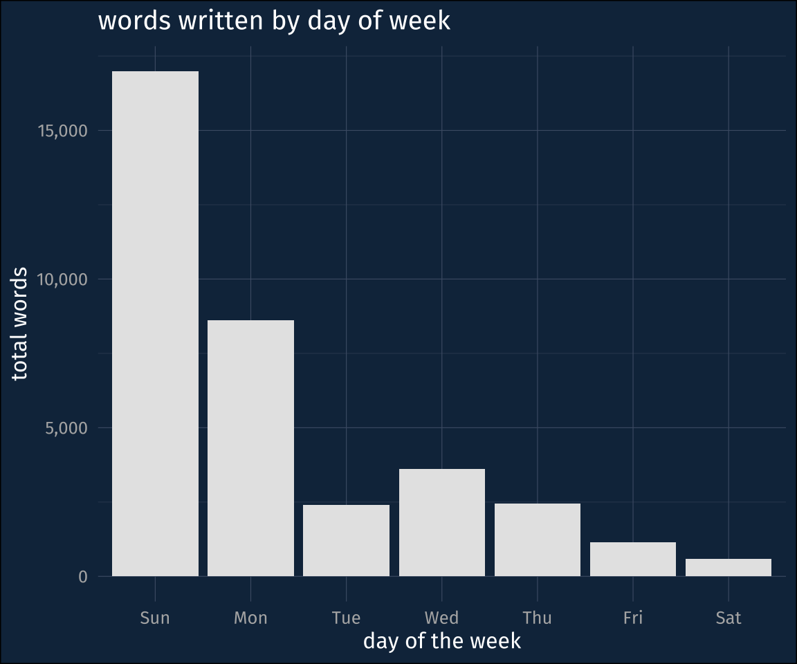

library(tidyverse)
library(tidyjson)
library(tidytext)
library(lubridate)
library(scales)
library(padr)
library(glue)
source(here::here("_defaults.R"))One of the courses I taught in the Fall 2022 semester was Natural Language Processing (NLP). It was a fun course to teach, and I learned a lot since it’s not a topic in my core areas of research. At the same time, the amount of work I put into it has made me really start to rethink how I prepare for teaching.
My tendency, for a while, has been to prepare extensive course notes that I publish on my website (Exhibit A, Exhibit B). I’ve never really reflected on how much work that actually takes. Moreover, I don’t tend to consider it when I reflect on how much “writing” I get done (and inevitably get a bit discouraged about my productivity).
But, it occurred to me that I could quantify how much writing I really did this semester. I wrote all my course notes in Quarto, which generates a search index in a .json file. To get a total count of words that I wrote in course notes, I just need to parse that json file and tokenize it! I found a handy blog post about analyzing git repos that helped a lot in the process.
Setup
This block of code is just copied from the blog post I just mentioned.
# Remote repository URL
repo_url <- "https://github.com/JoFrhwld/2022_lin517.git"
# Directory into which git repo will be cloned
clone_dir <- file.path(tempdir(), "git_repo")
# Create command
clone_cmd <- glue("git clone {repo_url} {clone_dir}")
# Invoke command
system(clone_cmd)There’s a handful of R libraries for reading json files into R, but after searching around I went with tidyjson because I like using tidyverse things.
search_file <- file.path(clone_dir, "_site", "search.json")
site_search <- read_json(search_file)I was really glad to find that the search.json file is relatively flat, so pulling out the metadata and text was not as complicated as it could have been.
site_search |>
gather_array() |>
hoist(..JSON,
"title",
"section",
"text"
) |>
as_tibble() |>
select(array.index, title, section, text) |>
unnest_tokens(input = text, output = "words") -> tokens_tableI noticed in the json file that there were multiple entries for a single page of course notes, one for each subsection, but there were also some entries with the subsection value set to blank. I just wanted to double check that the blank section entries weren’t the entire page of lecture notes, with additional entries duplicating the text by subsection.
tokens_table |>
mutate(has_section = section != "") |>
group_by(title, has_section) |>
count()# A tibble: 45 × 3
# Groups: title, has_section [45]
title has_section n
<chr> <lgl> <int>
1 Addendum FALSE 43
2 Addendum TRUE 100
3 Additional Neural Network Concepts FALSE 473
4 Additional Neural Network Concepts TRUE 1109
5 Comprehensions and Useful Things FALSE 1116
6 Data Processing FALSE 654
7 Data Processing TRUE 1804
8 Data Sparsity FALSE 720
9 Data Sparsity TRUE 1724
10 Evaluating models FALSE 42
# ℹ 35 more rowsLooks like no. The blank titled sections are probably cases where I had a paragraph or two that came before the first section header.
So how many words?
tokens_table |>
nrow()[1] 43637Based on the default tokenization from tidytext, it looks like I wrote just north of 40k words. I don’t have the best sense of how this compares to other kinds of genre writing, but apparently the goal of NaNoWriMo (National Novel Writing Month) is to write a novel that is 50k words.
So, I didn’t quite write a novel. But the amount of work that went into these 40k words was still considerable in terms of background research and trying to come to my own understanding of relatively complex mathematical formulae so that I could distill them into a comprehensible lesson. Also not accounted for was all the code I wrote and had to debug within the course notes!
How many words did I write over time?
Since I was publishing the course notes to github, that means I also have a preserved history of how my word count grew over time. All I have to do is apply the same procedures to the history of search.json.
code to get the git commit history
log_format_options <- c(datetime = "cd", commit = "h", parents = "p", author = "an", subject = "s")
option_delim <- "\t"
log_format <- glue("%{log_format_options}") |> glue_collapse(option_delim)
log_options <- glue('--pretty=format:"{log_format}" --date=format:"%Y-%m-%d %H:%M:%S"')
log_cmd <- glue('git -C {clone_dir} log {log_options}')system(log_cmd, intern = TRUE) |>
str_split_fixed(option_delim, length(log_format_options)) |>
as_tibble(.name_repair = "minimal") |>
setNames(names(log_format_options))->commit_historyget_length() function definition
get_length <- function(commit, clone_dir){
search_file <- file.path(clone_dir, "_site", "search.json")
checkout_cmd <- glue("git -C {clone_dir} checkout {commit} {search_file}")
system(checkout_cmd)
site_search <- read_json(search_file)
site_search |>
gather_array() |>
hoist(..JSON,
"title",
"section",
"text"
) |>
as_tibble() |>
select(array.index, title, section, text) |>
unnest_tokens(input = text, output = "words") |>
nrow() -> word_count
return(word_count)
}The data frame commit_history contains metadata about each commit. What I’ll do next is apply the function I wrote in the collapsed code above to the list of commit hashes, and get the word count at each commit.
commit_history |>
mutate(word_count = map(commit, ~get_length(.x, clone_dir)) |>
simplify()) -> word_historyI often had many commits in a single day, so to simplify things a bit, I’ll just get the max number of words I had by the end of a given day. Fortunately, I did not stay up past midnight pushing commits this semester, so the data shouldn’t be messed up by work sessions overlapping across days.
word_history |>
mutate(datetime = ymd_hms(datetime)) |>
thicken("day") |>
group_by(datetime_day) |>
summarise(words = max(word_count)) |>
arrange(datetime_day) -> daily_wordsCumulative Wordcount
Here’s the cumulative count of words over the course of the semester. I forget why, exactly, it starts out at 7,000 words. I think I might’ve been managing the course notes differently between the end of August and start of September, and then just copied them over. But it is a pretty continuous rise, with a few notable plateaus. Some of those plateaus occurred when I had actually prepared more than could be covered in a one or two class meetings, so we stayed with a set of lecture notes for a longer period of time.
plotting code
daily_words |>
pad("day") |>
fill(words) |>
ggplot(aes(datetime_day, words))+
geom_ribbon(aes(ymin = 0, ymax = words), alpha = 0.2)+
geom_line(linewidth = 1,
lineend = "round")+
expand_limits(y = 0)+
scale_y_continuous(labels = label_comma(),
expand = expansion(mult = c(0, 0.05)))+
scale_x_date(expand = expansion(mult = 0.01))+
labs(x = "date",
y = "number of words",
title = "Cumulative number of words in course notes")
When was I writing?
I can also double check when I was writing my course notes. I was teaching on a Monday-Wednesday-Friday schedule, and Fridays were usually given over to practical exercises (the text of which is largely absent from these counts…).
It was no surprise to me that I wrote most of the course notes on Sundays. The total number of Sunday words is about 17k, which comes out to about mean of about 1,300 words for Sundays this semester.
plotting code
daily_words |>
pad("day") |>
fill(words) |>
mutate(daily_words = words - lag(words),
wday = wday(datetime_day, label = T)) |>
drop_na() |>
group_by(wday) |>
summarise(word = sum(daily_words)) |>
ggplot(aes(wday, word))+
geom_col(fill = "grey90")+
scale_y_continuous(labels = label_comma())+
labs(x = "day of the week",
y = "total words",
title = "words written by day of week")

Thoughts
While I feel pretty good about the material I produced, I really don’t think this way of doing things is tenable. The writing that I did do for these course notes was writing that I didn’t do for any other project. Moreover, you can almost see how much energy Sundays took out of me! And even though I wasn’t writing as many course notes Tuesday through Friday, those were full work days that I was doing all of my other work during.
So the upshot is: I’m already brainstorming on how to not prepare like this for a class again!
Sources
Reuse
CC-BY-SA 4.0
Citation
BibTeX citation:
@online{fruehwald2022,
author = {Fruehwald, Josef},
title = {A Lesson in over-Preparing},
series = {Væl Space},
date = {2022-12-10},
url = {https://jofrhwld.github.io/blog/posts/2022/12/2022-12-10},
langid = {en}
}
For attribution, please cite this work as:
Fruehwald, Josef. 2022. “A Lesson in over-Preparing.” Væl
Space. December 10, 2022. https://jofrhwld.github.io/blog/posts/2022/12/2022-12-10.